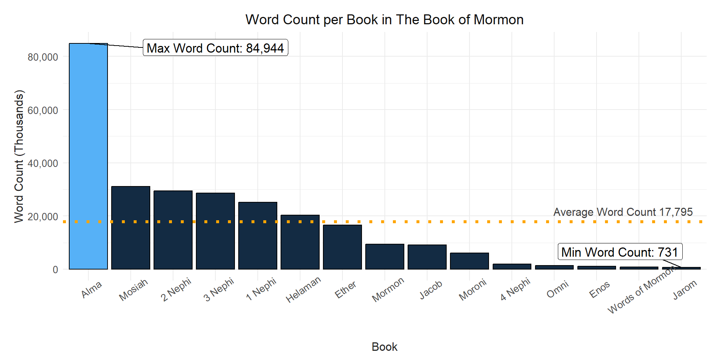
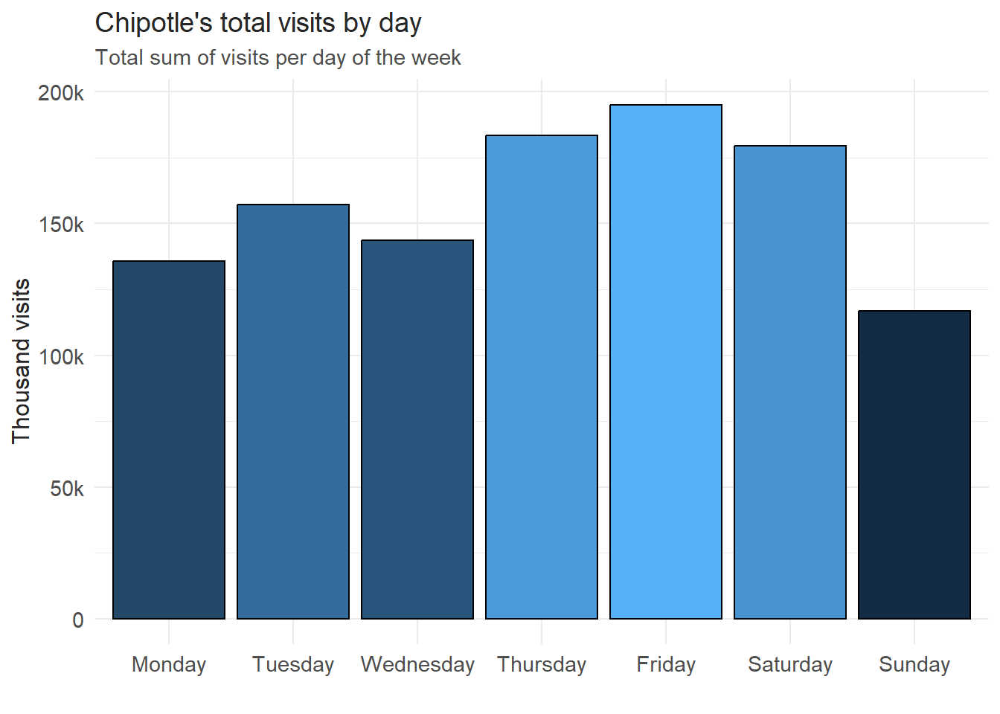
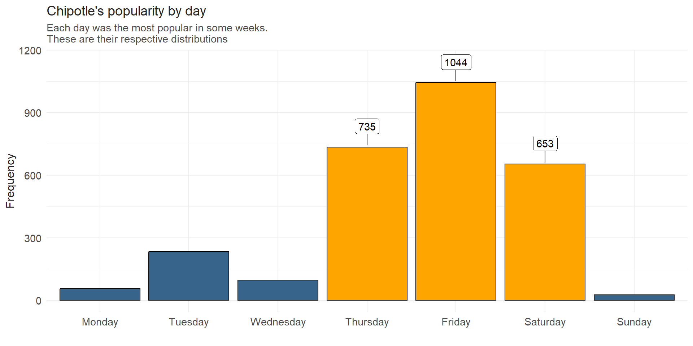
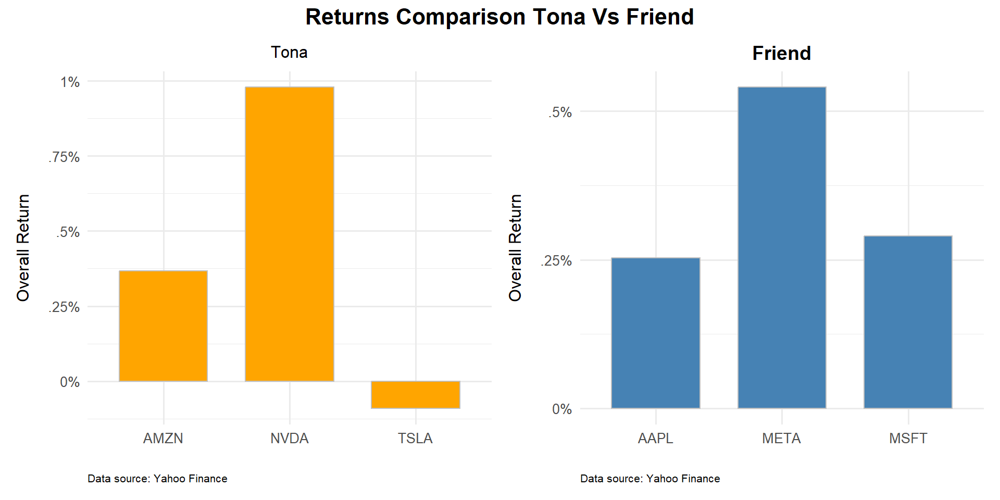

This section of my portfolio contains Bar Graphs
I’ve created throughout the years. Take a look at them! I created each
graph from scratch in R, check out the code with the show
buttons to the top right of each graph.
library(tidyverse)
library(ggrepel)
library(scales)
dt <- rio::import("http://scriptures.nephi.org/downloads/lds-scriptures.csv.zip") |>
as_tibble() |>
rename( title = volume_title,
text = scripture_text,
book = book_title ) |>
mutate(count = str_count(text, "\\S+"))
nt <- dt |>
filter(title == "New Testament")
bm <- dt |>
filter(title == "Book of Mormon")
bm1 <- bm |>
group_by(book) |>
summarise( count = sum(count)) |>
mutate(highbar = case_when(book == "Alma" ~ 1, TRUE ~ 0))
max_count <- max(bm1$count)
min_count <- min(bm1$count)
mean_count <- mean(bm1$count)
ggplot(bm1, aes(reorder(book, -count), count, fill = highbar)) +
geom_col(col = "black", show.legend = F) +
scale_y_continuous(labels = comma_format(accuracy = 1)) + # Remove decimals from y-axis
geom_label_repel(
data = subset(bm1, count == max_count),
aes(label = paste("Max Word Count:", formatC(count, format = "f", big.mark = ",", digits = 0))), # Corrected formatting
color = "black", size = 4.5, box.padding = 0.5,
fill = "white", nudge_x = 3
) +
geom_label_repel(
data = subset(bm1, count == min_count),
aes(label = paste("Min Word Count:", formatC(count, format = "f", big.mark = ",", digits = 0))), # Corrected formatting
color = "black", size = 4.5, box.padding = 0.5,
fill = "white", nudge_y = 3000
) +
# Add horizontal mean line
geom_hline(yintercept = mean_count, linetype = "dotted", color = "orange", size = 1.5) +
# Add annotation for the mean line
annotate(
"text", x = Inf, y = mean_count, label = paste("Average Word Count", formatC(mean_count, format = "f", big.mark = ",", digits = 0) ),
hjust = 1.1, vjust = -.75, color = "grey25", size = 4
) +
theme_minimal() +
labs(
title = "Word Count per Book in The Book of Mormon",
x = "Book",
y = "Word Count (Thousands)"
) +
theme(
plot.margin = margin(.5, 0, 0, .5, "cm"),
plot.title = element_text(hjust = .5, size = 14, colour = "grey5"),
axis.title = element_text(size = 12, colour = "grey15"),
axis.text.x = element_text(size = 10, angle = 35),
axis.text.y = element_text(size = 10)
)
The Book of Mormon is a compilation of 15 different books. We see that Alma being the longest book in The Book of Mormon (around 60 chapters) has the largest count.
The book of Jarom being the shortest book in length (1 chapter), has the fewest words. So this makes sense
As an extra, here is a comparison of both the New Testament and The Book of Mormon. Two interesting aspects are the verse length comparison of each book, with The New Testament having more, but shorter verses per Chapter; And the mentioning of the word “Jesus” in both books.
This makes sense since The Book of Mormon is known for using other adjectives to reffer to Christ, such as “Christ” and “Lamb of God”, etc.
The analysis is for educative purposes only, both books are read by Church members, and worldwide, and are equally important.
ntmn <- mean(nchar(nt$text))
bmmn <- mean(nchar(bm$text))
ntcnt <- sum(grepl("Jesus", nt$text))
bmcnt <- sum(grepl("Jesus", bm$text))
dt2 <- matrix(
c(round(ntmn), round(ntcnt), round(bmmn), round(bmcnt)),
nrow = 2,
ncol = 2,
dimnames = list(c("Mean Verse Length", "Jesus Word Count"), c("New Testament", "Book of Mormon"))
)
pander::pander(dt2, caption = "This is the word count and averages per book")| New Testament | Book of Mormon | |
|---|---|---|
| Mean Verse Length | 118 | 213 |
| Jesus Word Count | 935 | 161 |
library(tidyverse)
library(ggrepel)
dt1 <- read_csv("https://byuistats.github.io/M335/data/chipotle_reduced.csv")
## Popularity frequency by day wrangle,
##like how many times each day came out to be the most popular day for each observation (row)
string_to_dataframe <- function(input_string) {
days <- str_match_all(input_string, '"(\\w+)":(\\d+)')[[1]][, 2]
visits <- as.numeric(str_match_all(input_string, '"(\\w+)":(\\d+)')[[1]][, 3])
df <- tibble(day = days, visits = visits)
return(df)
}
find_most_popular_day <- function(input_string) {
df <- string_to_dataframe(input_string)
max_visits <- max(df$visits)
popular_days <- df$day[df$visits == max_visits]
if (length(popular_days) == 1) {
return(popular_days)
} else {
return(paste(popular_days, collapse = ", "))
}
}
dt1$popularity_by_day <- paste("'", dt1$popularity_by_day, "'", sep = "")
dt <- dt1 |>
rowwise() |>
mutate(most_popular_day = find_most_popular_day(popularity_by_day)) |>
separate(most_popular_day, into = c("most_popular_day_1", "most_popular_day_2"), sep = ", ", fill = "right")
day1 <- dt |>
group_by(most_popular_day_1) |>
summarise( days_count = n() ) |>
rename( day = most_popular_day_1 )
day2 <- dt |>
group_by(most_popular_day_2) |>
summarise( days_count = n() ) |>
rename( day = most_popular_day_2 )
popularity_by_day <- rbind(day1, day2) |>
group_by(day) |>
summarise(days_count = sum(days_count)) |>
drop_na() |>
filter(day != "") |>
mutate(
day = factor(day, levels = c(
'Monday', 'Tuesday', 'Wednesday', 'Thursday', 'Friday', 'Saturday', 'Sunday')),
"color" = ifelse(day %in% c('Thursday', 'Friday', 'Saturday'), 1, 0))
## Overall Visit Frequency per day
#didn't get this one, will do in class
nesteddt <- dt1 |>
dplyr::select(placekey, popularity_by_day) |>
# filter(!is.na(popularity_by_day)) |>
group_by(placekey) |>
nest() |>
mutate(popularity_count = map(data, ~string_to_dataframe(.x$popularity_by_day))) |>
dplyr::select(-data) |>
unnest(cols = popularity_count) |>
group_by(day) |>
summarise( total = sum(visits))
nesteddt$day <- factor(nesteddt$day, levels = c("Monday", "Tuesday", "Wednesday", "Thursday", "Friday", "Saturday", "Sunday"))
ggplot(nesteddt, aes(day,total,fill=total))+
geom_col(show.legend = F, col="black")+
theme_minimal()+
scale_y_continuous(breaks = seq(0,200000,by=50000), labels = c("0","50k","100k","150k","200k")) +
#scale_fill_manual(values = c("0" = "skyblue", "1" = "orange")) +
# geom_label_repel(
# aes(label = ifelse(day %in% c("Thursday", "Friday", "Saturday"), days_count, "")),
# box.padding = unit(0.35, "lines"),
# point.padding = unit(0.5, "lines"),
# fill="white",
# nudge_x = 0,
# nudge_y = 100
# ) +
labs(y="Thousand visits",
x="",
title="Chipotle's total visits by day",
subtitle = "Total sum of visits per day of the week")+
theme(
plot.title = element_text(color = "grey15", size=14),
plot.subtitle = element_text(color = "grey30", size=11),
axis.title = element_text(color = "grey15", size=12, vjust = 3),
axis.text = element_text(color = "grey30", size=11))
I got Data for visits at Chipotle in a couple states in the U.S. for September 2021. First I’ll check if there is a pattern in daily visits. In other words, what day was the more visited overall.
Above is the total amount of visits by day for September 2021. Visits are higher on the weekends excluding Sundays, which makes sense.
Let’s go a little deeper. Since I have data for 2,844 restaurants, I checked what day was the most popular for each restaurant. Some of them had two more popular days so those are double counted being equally as important. This is what I got:
ggplot(popularity_by_day, aes(day,days_count, fill=as.factor(color)))+
geom_col(show.legend = F, col="black")+
theme_minimal()+
scale_fill_manual(values = c("0" = "steelblue4", "1" = "orange")) +
geom_label_repel(
aes(label = ifelse(day %in% c("Thursday", "Friday", "Saturday"), days_count, "")),
box.padding = unit(0.35, "lines"),
point.padding = unit(0.5, "lines"),
fill="white",
nudge_x = 0,
nudge_y = 100
) +
labs(y="Frequency",
x="",
title="Chipotle's popularity by day",
subtitle = "Each day was the most popular in some weeks.\nThese are their respective distributions")+
theme(
plot.title = element_text(color = "grey15", size=14),
plot.subtitle = element_text(color = "grey30", size=11),
axis.title = element_text(color = "grey15", size=12, vjust = 3),
axis.text = element_text(color = "grey30", size=11))
We can see that after sampling the frequency of each day in which each restaurant was visited the most; we can state something that Weekends are the most popular days for Chipotle Restaurant, including Thursdays and not Sundays.
Even when this may have been not too illogical to conclude without data, it is necessary to check our statistics because Chipotle might think of hiring for specific days to cut costs, or offer some discounts the rest of the days to get sales higher. But many insights can be taken out from this graph.
library(tidyverse)
library(tidyquant)
library(patchwork)
top_port <- c("NVDA","TSLA", "AMZN")
price_data <- tq_get(top_port,
get = "stock.prices",
from = "2023-10-01")
return_data <- price_data %>%
group_by(symbol) %>%
tq_transmute(select = adjusted,
mutate_fun = periodReturn,
period = "daily",
type = "log")
tona <- return_data %>%
tq_portfolio(assets_col=symbol,
returns_col=daily.returns,
weights = tibble(asset.names = c("NVDA","TSLA", "AMZN"),
weight = c(0.333, 0.333, 0.334)),
wealth.index = T) %>%
mutate(Portfolio = "Tona")
top_port1 <- c("META","AAPL", "MSFT")
price_data <- tq_get(top_port1,
get = "stock.prices",
from = "2023-10-01")
return_data1 <- price_data %>%
group_by(symbol) %>%
tq_transmute(select = adjusted,
mutate_fun = periodReturn,
period = "daily",
type = "log")
ammon <- return_data1 %>%
tq_portfolio(assets_col=symbol,
returns_col=daily.returns,
weights = tibble(asset.names = c("META","AAPL", "MSFT"),
weight = c(0.333, 0.333, 0.334)),
wealth.index = T) %>%
mutate(Portfolio = "Friend")
combined_data <- rbind(tona, ammon)
top_port <- c("NVDA","TSLA", "AMZN")
price_data <- tq_get(top_port,
get = "stock.prices",
from = "2023-10-01")
return_data <- price_data %>%
group_by(symbol) %>%
tq_transmute(select = adjusted,
mutate_fun = periodReturn,
period = "daily",
type = "log")
overall_returns <- return_data %>%
group_by(symbol) %>%
summarise(overall_return = sum(daily.returns, na.rm = TRUE))
overall_returns1 <- return_data1 %>%
group_by(symbol) %>%
summarise(overall_return = sum(daily.returns, na.rm = TRUE))
p1 <- ggplot(overall_returns, aes(x = symbol, y = overall_return, fill = symbol)) +
geom_bar(stat = "identity", show.legend = FALSE, width = 0.7, fill="orange", color="grey75") +
scale_y_continuous(breaks = seq(0,
1,
by=.25),
labels = c("0%",
".25%",
".5%",
".75%",
"1%")) +
labs(
title = "Tona",
x = "",
y = "Overall Return",
caption = "Data source: Yahoo Finance"
) +
theme_minimal(base_size = 12) +
theme(
plot.title = element_text(size = 12, hjust = 0.5),
axis.text = element_text(size = 10),
axis.title.y = element_text(margin = margin(r = 12)),
plot.caption = element_text(size = 8, hjust = 0)
)
p2 <- ggplot(overall_returns1, aes(x = symbol, y = overall_return, fill = symbol)) +
geom_bar(stat = "identity", show.legend = FALSE, width = 0.7, fill="steelblue", color="grey75") +
scale_y_continuous(breaks = seq(0,
1,
by=.25),
labels = c("0%",
".25%",
".5%",
".75%",
"1%")) +
labs(
title = "Friend",
x = "",
y = "Overall Return",
caption = "Data source: Yahoo Finance"
) +
theme_minimal(base_size = 12) +
theme(
plot.title = element_text(face = "bold", size = 14, hjust = 0.5),
axis.text = element_text(size = 10),
axis.title.y = element_text(margin = margin(r = 12)),
plot.caption = element_text(size = 8, hjust = 0)
)
p1 + p2 + plot_layout(ncol = 2) +
plot_annotation(
title = "Returns Comparison Tona Vs Friend",
theme = theme(
plot.title = element_text(size = 16, face = "bold", hjust = 0.5),
plot.subtitle = element_text(size = 12, hjust = 0.5, colour = "grey30")
)
)
A Friend and I picked stuff just for fun, followed their performance over a month, and then compared returns to see who would’ve earned the most.
Here is the conclusion:
tona <- sum(overall_returns$overall_return)
friend <- sum(overall_returns1$overall_return)
dt2 <- matrix(
c((tona), (friend)),
nrow = 1,
ncol = 2,
dimnames = list( c("Total Return (Percent)"),c("Tona", "Friend"))
)
pander::pander(dt2, caption = "This was the final result of the stock picking game")| Tona | Friend | |
|---|---|---|
| Total Return (Percent) | 1.256 | 1.084 |